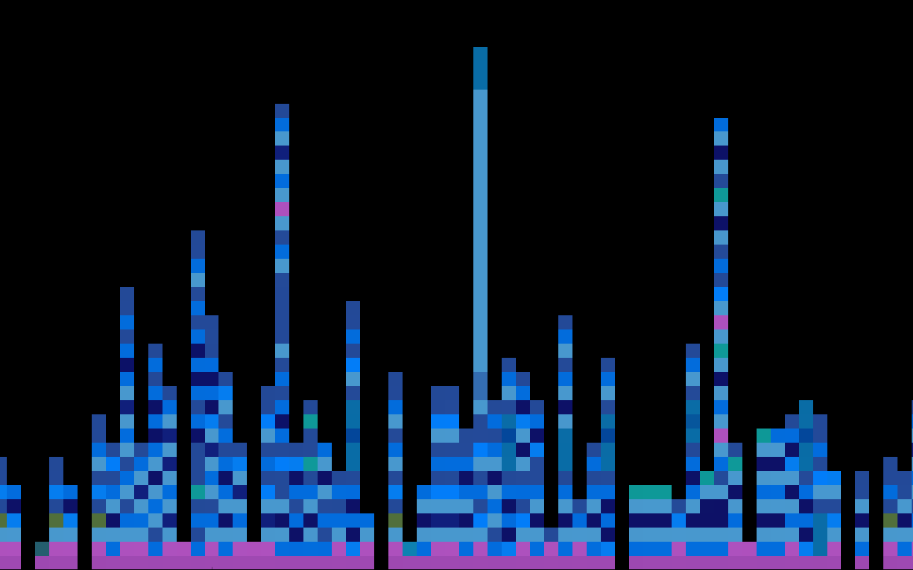

Source code abstracts classification using CNN
Vadim Markovtsev source{d}

Plan
- Motivation
- Source code feature engineering
- Network architecture - classification
- Implementation details
- First results
- Approaches to developers clustering
- Distance Metric Learning
- Network architecture - future